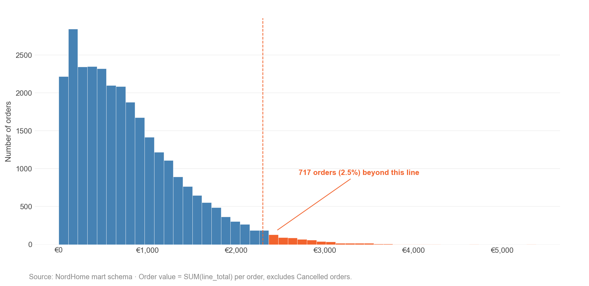
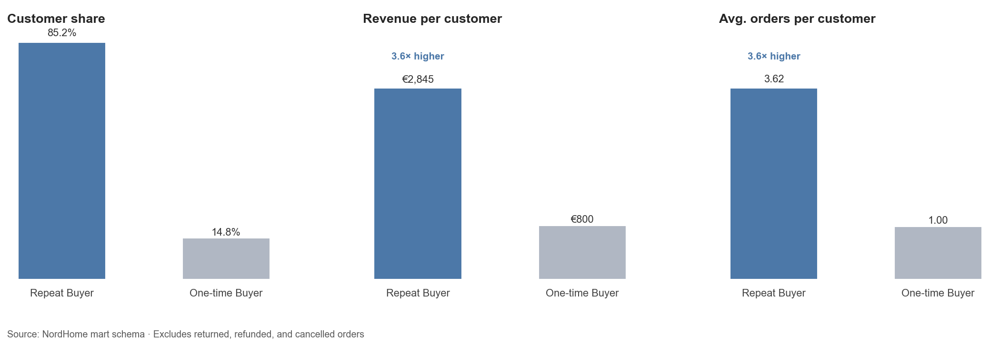
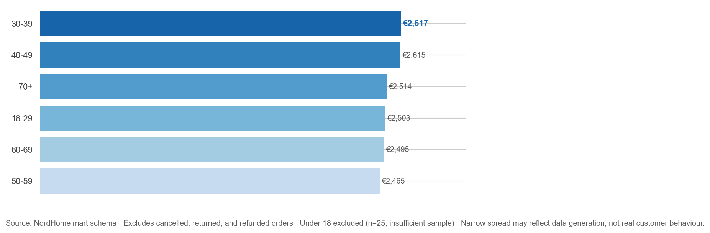
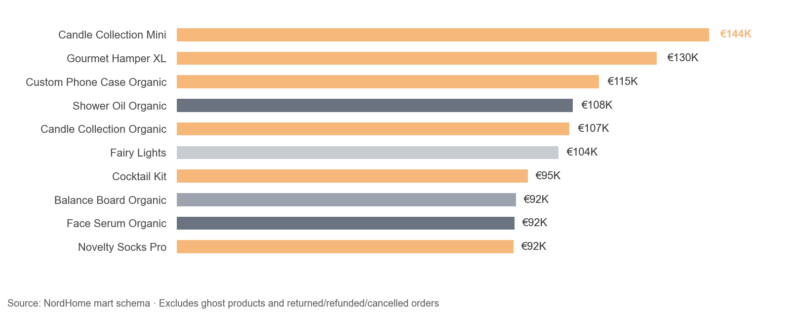
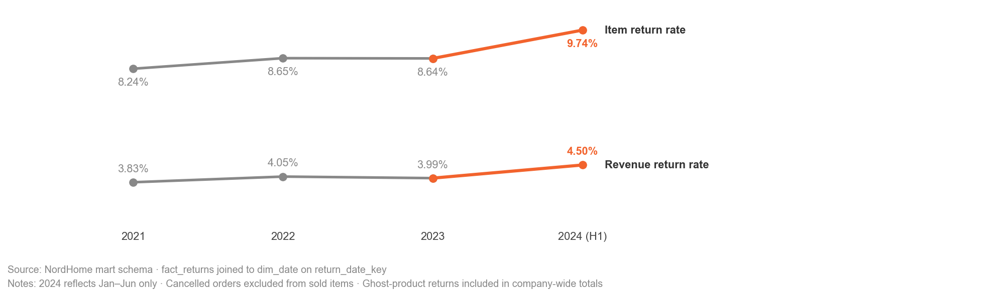
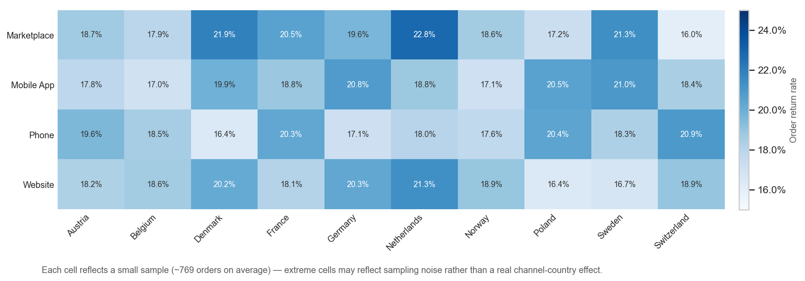

Exploratory data analysis
Exploring patterns, relationships and anomalies hidden in retail data.
Python · Pandas · NumPy · Matplotlib
GitHub: full EDA notebook and insights →01 — Dataset
Dataset at a glance
Dataset period: January 2021 – June 2024
Counts come from the raw files. Duplicates and data-quality issues were cleaned or flagged before the analysis.
Before analysing individual metrics, I explored the structure, distributions and quality of the dataset to understand what patterns could reasonably be investigated.
02 — Scope
What I explored
- Revenue5 questions
- Customers6 questions
- Products4 questions
- Payments2 questions
- Returns4 questions
- Marketing3 questions
For each area, I examined distributions, segment differences, relationships, trends and unusual observations.
03 — Exploration
Exploring the data
A · Distributions
Question: How are order values distributed, and do a few extreme orders inflate the average?
Order values are strongly right-skewed
Most orders fall within a relatively narrow range, while a small number extend far beyond the typical distribution. The median order is €658; the mean is €787.
I kept the extreme orders in the analysis: excluding the 717 flagged orders (2.5%) would shift the average order value by only 6.3%.

B · Comparisons & segments
Question: Do customers who buy more than once look different from one-time buyers?
Repeat customers show a substantially different spending pattern
85.2% of customers ordered more than once. They spend €2,845 on average across 3.6 orders, compared with €800 for one-time buyers — about 3.6× more per customer. The comparison counts orders, not the time between them, so two orders in one week also count as “repeat”.

Question: Does age separate high-value from low-value customers?
Age groups show relatively similar revenue per customer
Average revenue per customer runs from €2,465 (50–59) to €2,617 (30–39), a spread of roughly 6%. Age alone does not separate customers by spend.

Question: Which products lead on revenue, and which categories do they come from?
A small group of products dominates the top revenue range
Gifts (orange) account for 6 of the 10 best-selling products, including the top three. The ten sit in a tight band: the best earns about 1.6× the tenth (€144K vs €92K).

C · Change over time
Question: How have return rates developed year over year?
Return rates held steady for three years, then rose in H1 2024
The item return rate stayed between 8.2% and 8.7% from 2021 to 2023 and reached 9.7% in H1 2024; the revenue return rate moved from about 4% to 4.5%. 2024 covers January–June only, so this is a signal to investigate, not a conclusion.

D · Relationships
Question: Where do order return rates run highest, and is the variation meaningful?
Return rates vary little by channel or country — until the two are crossed
EDA is not only about single distributions. I also looked at how variables interact and how much of the visible variation could be noise. Across 40 channel × country combinations, order return rates range from 16.0% to 22.8% (average 19.0%). The highest cell, Marketplace in the Netherlands, rests on roughly 750 orders, so it may be sampling noise; a proportion test would be the next step.
A null result points the same way: unpaid payment value was proportional to processed value for every payment method (largest deviation +0.29 percentage points).

E · Outliers & anomalies
Question: How is revenue per customer distributed, and who falls outside the typical range?
A small number of customers fall outside the typical range
I used the IQR method (Q3 + 1.5 × IQR) to identify observations outside the typical distribution. The typical range (Q1–Q3) of customer revenue runs from €1,216 to €3,446; the highest flagged customer reaches €11,428. The 1.9% refers to the 7,969 customers in the analysed base.
An outlier is an observation that differs statistically from the rest of the dataset — it is not automatically an error. The IQR rule is a statistical convention, not a business definition.

04 — Findings
Patterns that stood out
- 01Spending is highly skewed at both order and customer level.
- 02Repeat customers spend very differently from one-time customers (€2,845 vs €800).
- 03A small group of products dominates the top revenue range: 6 of the top 10 are Gifts.
- 04Many variables show surprisingly little differentiation between segments — country, channel, age group, loyalty status and payment method barely move the numbers.
05 — Limitations
Data quality & limitations
- The dataset is synthetic. Some distributions are intentionally balanced — for example 9–10% of customers per country and about 25% of revenue per sales channel — and such similarities may reflect the data-generation process rather than real behaviour.
- Order values look generation-driven too: unit prices are capped at €250 and the average quantity is exactly 3.00, so the average order value should not be benchmarked against real retail.
- 2024 covers January–June only, and some cell-level comparisons rest on small samples (roughly 750 orders per channel × country cell).
Statistical patterns identified during EDA should be treated as hypotheses for further analysis rather than causal conclusions.
06 — Next
From EDA to the next question
07 — Methods
Methods
The detailed analysis stays on GitHub — this page is the visual summary.
GitHub: full EDA notebook and insights →